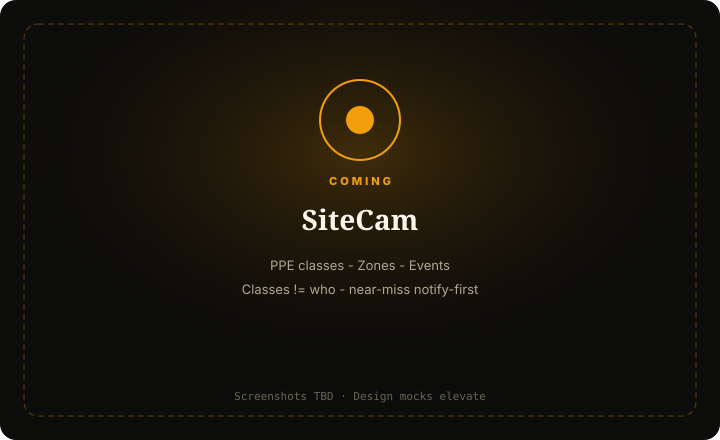

SiteCam
Worksite safety ops — PPE classes, zones, near-miss notify-first.
For site leads who need class-based PPE and zone breach awareness — classes ≠ who.

What it does
SiteCam watches worksite safety: Live feed, Events, Zones, and notify-first automations for PPE class misses and near-miss/zone breach.
PPE classes are category signals — not person identity. Near-miss stays notify-first.
Capabilities
Day-one surface vs Advanced / gated — from Clarity GH Pages pack.
Day-one surface
Live
Day oneSite feed + zone/PPE overlays
Events
Day oneNear-miss / breach / PPE miss cards
Zones
Day oneWork / exclusion / vehicle paths
Automations
Day oneNotify (dry-run)
Advanced / gated
Dense identity / face watchlists
BLOCKOut of day one (Compliance)
Named worker fault dossiers
OutForbidden day one
How to use it
First-run (outline)
Add feed
—
Draw zones
—
PPE/class or presence proof
—
Step E
Notify me (dry-run).
Confirm classes ≠ identity
In Features copy.
Daily loop (outline)
Live + Events triage
—
Near-miss / breach first
—
Retune zones
As site changes.
Automations after dry-run
—
Badge
Near-miss/breach/cam — not sleeping.
Honesty / trust
PPE classes ≠ who; near-miss notify-first.
- PPE classes ≠ who — category, not identity.
- Near-miss = notify-first; don’t soft-pedal breaches if armed.
- No face ID day one.
- Dry-run ≠ live notify storm until armed.
Screenshots
Screenshots TBD from Design mocks — capture when Design elevates.
Capture when Design elevates
PPE classes ≠ who; near-miss notify-first
Get started
Stub page — full elevate after Design screenshots. Honesty locks already live.